49 个目标
桌面、移动端、鸿蒙、小程序、TV、穿戴与嵌入式目标共享同一套 TargetSpec 与打包器契约。
RUST × REACT · 49 个目标
把 Rust 核心、React UI 适配层与 49 个目标平台串成一条可验证、可签名、可自托管的构建流水线。

项目介绍
PolyPack 用一条声明式流水线把 Rust 业务核心与 React UI 适配层带到桌面、移动端、小程序、TV、穿戴和嵌入式平台。每个产物都有可复现构建、结构校验、签名与可选的 SBOM。
一套配置、一条 DAG、一个回执格式。目标由 TargetSpec 描述，打包器通过 ProviderRegistry 统一装配；内建目标与第三方插件走同一条沙箱与签名链。
能力
不是又一个脚手架，而是从构建、校验、签名、发布到热更的完整链路。
桌面、移动端、鸿蒙、小程序、TV、穿戴与嵌入式目标共享同一套 TargetSpec 与打包器契约。
结构校验、可复现构建、产物摘要、SBOM 与签名回执在同一条 DAG 内完成。
polypack release --changed 用内容摘要跳过未变化目标；五目标实测后端调用 5→1。
Wasmtime 默认零能力，目录与出网显式授权，fuel / epoch / 内存三道上限，SRI 与 GPG 信任根。
deb / rpm / pkg / pkgsrc 仓库签名，Tauri v2 更新清单、回滚与真实演练。
多 worker 并发、共享 CAS、构建历史 JSONL、GUI 矩阵与设备预览协议。

功能迭代
从最小构建 DAG 到 49 目标、插件生态、农场与 M9 收尾，每一步都留下可复跑的测试与文档。
配置、计划、构建、缓存与事件流。
MSI / NSIS、Tauri 布局与桌面产物。
Android AAB/APK、iOS IPA、uniffi / wasm 桥。
微信 / 支付宝 / 抖音 / 快应用代码包与预览。
android-tv、Fire TV、tvOS、Tizen、webOS 等。
deb / rpm / pkg / pkgsrc 仓库、签名与回执。
QNX、VxWorks、Zephyr、FreeRTOS、AUTOSAR。
Wear OS、watchOS、Fitbit、Zepp、Garmin。
插件沙箱、WIT v1、模板、统一 Provider、农场 v1。
SBOM、工作区、增量发布、OTA、GUI、设备预览、签名插件索引。
版本日志
安装
预编译二进制适合大多数用户；需要参与开发或自定义目标时从源码构建。
curl -fsSL https://raw.githubusercontent.com/erikwang2013/polypack/v2.0.1/scripts/install.sh | bash
polypack --version强制 SHA-256 校验；配置 MINISIGN 公钥后可启用严格签名验证。
# Download polypack-x86_64-pc-windows-msvc.zip from downloads/,
# verify SHA256SUMS.txt, then add polypack.exe to PATH.
polypack --versiongit clone https://github.com/erikwang2013/polypack
cd polypack
cargo install --path crates/polypack-cli
polypack doctor需要一个可用的 Rust 工具链（MSRV 1.98）。完整说明见 docs/INSTALL。
使用说明
polypack init my-app
cd my-app
polypack doctor
polypack build --target webpolypack verify --reproducible
polypack verify --sbom --target web
polypack release --changed --target linux,web \
--repo .polypack/repo --credential env:RELEASE_GPG_KEYpolypack plugin new my-target
polypack plugin check my-target
polypack plugin add my-plugin --index ./index.json \
--trust-root env:INDEX_KEY --publisher-key env:PUBLISHER_KEY
polypack plugin search my-plugin --index ./index.json \
--trust-root env:INDEX_KEY --revocations-trust-root env:REVOCATION_KEYpolypack history --target web --limit 10
polypack update manifest --channel stable --version 1.2.3 \
--platform windows-x86_64 --artifact app.nsis.zip --base-url https://updates.example.com
polypack preview --dry-run --target android --device android-phone打赏
如果 PolyPack 帮你省下了时间，欢迎微信或支付宝支持项目继续维护。点击二维码可放大。
扫码支持 PolyPack 持续维护，感谢你请 erik 喝咖啡。
扫码支持 PolyPack 继续维护。